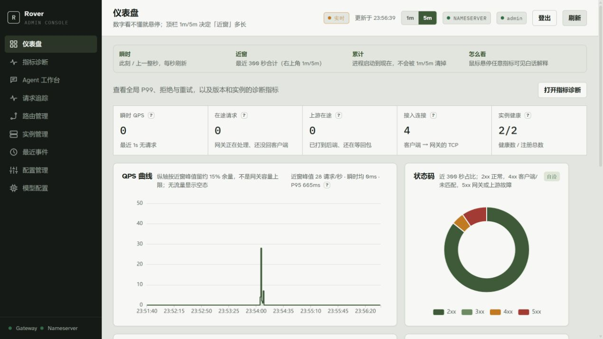
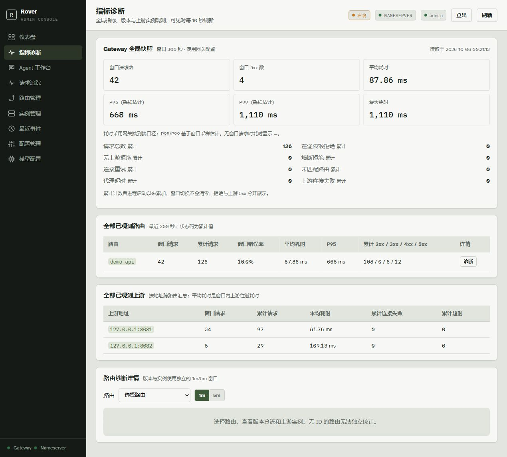

网关与发现
Gateway 通过本地实例缓存转发请求，Nameserver 负责注册、健康检查和快照推送。请求不在每次调用时去问注册中心。
查看详情 →自带注册中心与网关路由。
小团队无需在每个 Nginx 或前端配置中硬编码后端地址。
Rover-Suite 是一套让微服务在网络中自由漫游的基础设施。
git clone https://github.com/zzl-qz/Rover-Suite.git roverSuite
cd roverSuite/deploy/docker
docker compose up --build
curl -i http://127.0.0.1:8080/api/hello
Admin 控制台：http://127.0.0.1:9090
清理环境：docker compose down

截图来自真实运行的本地演示进程，指标由实际 HTTP 请求产生。
注册、路由、诊断与运维调查（Preview）。
Gateway 通过本地实例缓存转发请求，Nameserver 负责注册、健康检查和快照推送。请求不在每次调用时去问注册中心。
查看详情 →Java 服务使用 Starter。Node.js、Python、Go、PHP 与 C++ 通过 HTTP+JSON API 注册。
查看详情 →Admin 提供仪表盘与指标诊断，包括全局 P95/P99、路由版本、上游实例，以及采样追踪和可热更新配置。
查看详情 →Ops Agent 基于 Gateway 与 Nameserver 的运行时数据做只读故障调查，返回结论、证据来源和采集时间。灰度版本权重调整需开成待人工审批的变更单，批准后才执行，执行后回读确认，并可补偿回滚。
查看详情 →轻量扩展：Java SPI Filter / LoadBalancer 覆盖常见定制，不必一上来引入完整服务网格。详见 插件开发与接入。
服务登记之后，Gateway 只把流量交给还健康的实例。
Java 服务用 Starter 向 Nameserver 注册。Node.js、Python、Go、PHP、C++ 走 HTTP+JSON API。Docker 演示里 Nameserver 的 HTTP 口在 127.0.0.1:8889。
Nameserver 做健康检查，并把实例快照推给 Gateway。Gateway 记在本地缓存里，转发时不再逐次查询。
调用方访问 Gateway 127.0.0.1:8080。已支持按组发现和 targets 加权版本路由。下线实例不再接到流量。
Admin 同时提供实时仪表盘和完整指标诊断。

可见全局 P95/P99、路由版本、上游实例、累计拒绝与重试计数，以及采样追踪、注册事件和可热更新配置。截图来自真实运行的本地演示进程。
服务地址变化时，不再逐处修改配置。
Rover-Suite 面向多单体、旁路服务和混合语言服务逐渐变多的小团队。
服务向 Nameserver 注册。Gateway 只路由到健康实例，Nginx 与前端配置不必随后端地址逐处修改。
按语言与场景进入对应文档。
按任务进入仓库里的公开文档。中英文索引在 docs-public。
下列能力尚未纳入当前实现。
当前版本为 1.0.0-SNAPSHOT 单节点预览。
targets 加权版本路由。group 只用来过滤路由，不是租户安全边界。如果页面或产品有需要调整的地方，欢迎通过下面任一方式说明。
需要帮助？查看 快速开始